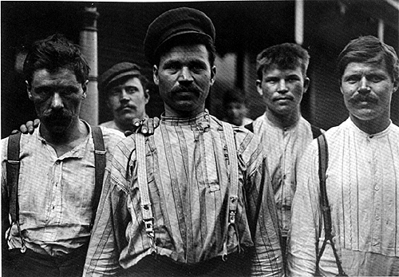
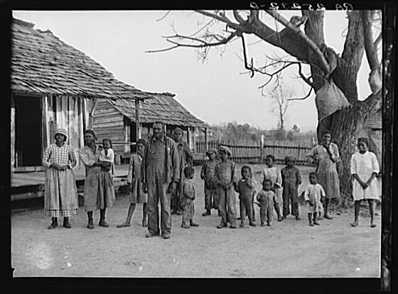
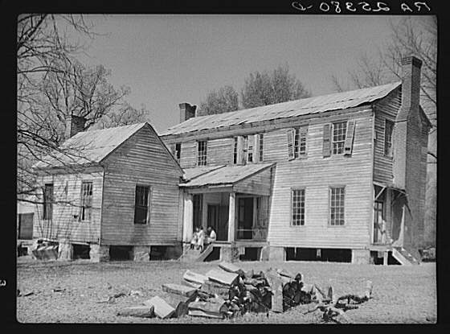
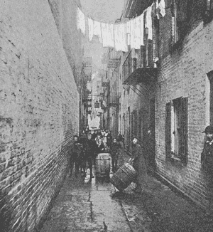
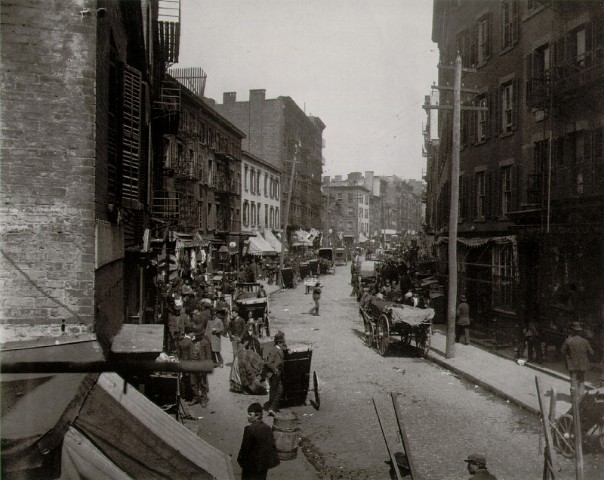
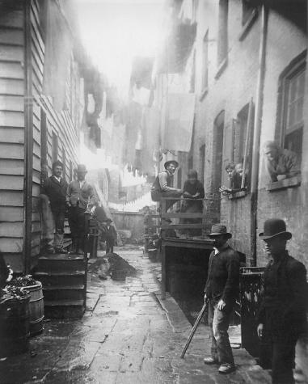
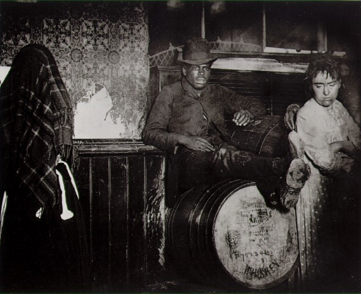

|

Lewis Hine, Russian steel workers,
Homestead, Pa., 1908
[see
large image]
Lewis Hine took many of his most famous photographs while working for
social reform agencies, such as New York’s Charity Organization Society
and the National Child Labor Committee. (The Charity Organization Society
began in 1896 and the National Child Labor Committee was organized in
1904, just two of many reform organizations during the Progressive era
that advocated for the amelioration of poverty, improvements to working
conditions, and the end of child labor.) The reform goals of these organizations
had a direct bearing on Hine’s work. In 1908 he spent three months
taking photographs for the Pittsburgh Survey, a pioneering investigation
of working and health conditions in that steel-producing center. Hine’s
photographs illustrated the multi-volume report that caused a sensation
in reform circles. In a manner similar to his photographs of immigrants
at Ellis Island and child workers, Hine's Pittsburgh Survey pictures addressed
the sympathies of viewers who would come across them in the pages of reform
publications. Subjects such as the Russian steelworkers captured by Hine
in 1908 were depicted without the wariness, the underlying fear, that
characterized many of Jacob Riis's photographs of the urban poor. On the
contrary, the immigrant workers in Hine’s photographs were portrayed
as worthy of viewers’ sympathy, exploited and yet still dignified,
deserving candidates for U.S. citizenship.

Arthur Rothstein, Negroes, descendants
of former slaves of the
Pettway Plantation, Gees Bend, Alabama, 1937
[see
large image]
While reformers used documentary photography to illustrate the goals
of reform movements, photographs could also illustrate the biases and
racist assumptions of private and government aid agencies. Arthur Rothstein
took the photograph above in Gee’s Bend, Alabama, in the spring of
1937. Rothstein’s employer, the Farm Security Administration (FSA),
had been providing assistance to this community of African-American sharecroppers
for more than two years by the time the young government photographer
arrived. Nevertheless, Rothstein was instructed to photograph the community
as if there had been no such assistance granted—to capture its so-called
primitive condition and thus elicit support for the kind of federal aid
that the FSA was providing to rural farmers.
Rothstein was told that the families at Gee’s Bend lived on an old
plantation, abandoned by white owners three decades earlier. Isolated
from the surrounding society, Gee’s Bend appeared to the government
as a throwback to tribal society in Africa. The community was marked by
a high rate of out-of-wedlock births, Rothstein was told, and the large,
sprawling families lived in rude shacks that they erected themselves made
of sticks and mud. The photograph above is typical of the more than fifty
images Rothstein recorded during his visit. The caption for the image
says that this is a single-family group. That caption implies that the
sole male figure in the picture has fathered all of the children present.
Both the pose and the caption stand at odds with normal FSA practice of
showing small white families, lest the presence of many children put off
viewers rather than enlist their sympathy.
Rothstein showed no such restraint in his photographs or his captions.
In a number of captions he spoke of large families of Negroes at Gees
Bend, Alabama, referring to them as “Descendants of slaves of
the Pettway plantation. They are still living very primitively on the
plantation.” To further emphasize how the former plantation had
fallen into ruin, Rothstein took the following picture of the Pettway
mansion which he wrote was now “occupied by Negroes.”

Arthur Rothstein, Home of the Pettways,
now inhabited by Negroes.
At Gees Bend, Alabama, 1937
[see
large image]
Stripped of their didactic captions, Rothstein’s images provide
visual clues suggesting that the African-American residents of Gee’s
Bend lived not in a primitive society but in an economically depressed
condition similar to that of white sharecroppers in the rural South. Far
from proving that the hamlet’s occupants were unable to care for
themselves, the images demonstrate a high level of competence and self-sufficiency.
The notched log timbers of these buildings provided ample proof of the
artisanal skill of the residents. As for his courtyard picture, Rothstein
neglected to identify his main subject as the village elder who stood
proudly before his extended family. The man was a grandfather and great
grandfather, and this is a multigenerational portrait. The fathers of
the children do not appear in the picture, either because Rothstein excluded
them or because they were working at the time the photo was taken.
 This
is the Fourth Ward, long given up to the worst abominations in the way
of human dwellings. That alley has a bad record. A murder was committed
there less than a week ago, and it was not the first by a great many.
In point of nationality it is typical of all down-town New York city.
When I took a census once of that alley, there were one hundred and
forty families, one hundred Irish, thirty-eight Italians, and two German,
and not a native born individual in the entire alley except the children.
No one but an Irishman could have thought of the answer one gave me
when I asked him what was the reason a policeman was always on duty
there. He said, “It’s on account of them two Dutch families
that live in the alley. They make so much trouble.” [Laughter.] A Chinaman
of whom I asked the same question outside the alley took another view
of it. He just took one look down the alley and then hurried on; “Lem
Ilish velly bad,” he said. [Laughter.] When the cholera came along
some years ago, the ratio of deaths was not over sixteen or seventeen
to the thousand in the “clean” wards up-town, but down there
in that alley it was one hundred and ninety-five to the thousand. That
is what such a place stands for in times of epidemic.
next
slide >>
 Not
very far from that house there is a block that is reputed to be the
worse spot in the country, and I should say it might be true from my
acquaintance with it. It was decided to tear it down long since, but
five years have passed, and the block is there still. We go slowly,
very slowly in such matters as that in New York, when there is neither
money nor politics in it. Here you are with the Italians. They live
out of doors most of the time, and that is why they are healthy though
dirty, and the death rate is not so large. Go there at sunset some evening,
and you will see an army of men and women slouching along with the unmistakable
gait of the tramp. Where they all go will puzzle you. One by one they
disappear, even while you look and before your very eyes. You will be
troubled to find what becomes of them, till you look sharp and find
doorways leading into side alleys.
next
slide >>

This one was called Bandit’s Roost from an old Neapolitan
bandit who lived there and died there. Since then the “Roost”
has been filled up by rather inoffensive Italians, who do no harm except
on Sunday, when they take to playing cards and generally in the end
to the knife; then murder comes in to finish the business.
next
slide >>
 And
now we come to the bottom, down to the black-and-tan dive. When the
black and white of both sexes meet on such ground, then you have the
abomination than which there is none more vile. From there the descent
is very easy to the rogue’s gallery.
next
slide >>
Conclusion
Riis’ commentary attaches very specific stories and
ideas to photos that, viewed on their own, invite a variety of interpretations.
While Riis and his listeners shared a strong desire to improve living
conditions in poor city neighborhoods, their attitudes mirrored the
prejudices of the dominant culture toward “foreigners,” as
evidenced by Riis’ words and the audience reactions indicated in
brackets in the transcribed text. A mix of disdain and social outrage
marked Riis’ presentation of the photos. For example, he pairs
a supposedly humorous account of how various ethnic groups on a block
account for crime with the fact that so many more poor residents than
wealthy ones die during cholera epidemics. Considering Riis’ photographs
in the context that most turn-of-the-twentieth-century viewers would
have experienced them—with Riis’ prejudices and reform agenda
to guide their interpretations—is crucial for understanding them as
historical documents.
restart
>>
Jacob Riisa journalist and photographer of industrial
America and himself a Danish immigrantexposed the deplorable conditions
of late nineteenth-century urban life in his widely-read book, How
the Other Half Lives, first published in 1890. He also presented slide
shows to reform-minded, middle-class audiences.
Examine
four of the photographs that Riis used to accompany a lecture that
he delivered (probably in 1894) to the Washington Convention of Christians
at Work. The lecture was titled “The Other Half and How They Live;
A Story in Pictures.” Next look at the photos
alongside the words that Riis used when presenting them. (The text
excerpts are from a transcript of the lecture published in the January
1895, issue of The Temple Builder, a magazine for Christian reformers.)
|